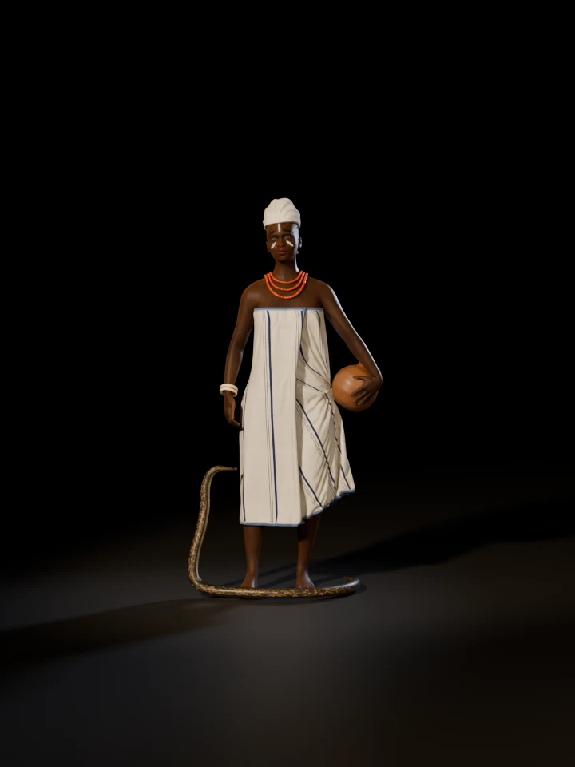

Igbo alụsị of the Idemili River
Idemili of Nnobi
A photoreal study of the river goddess at dawn in her own water: a wrapper of akwa miri tied at the chest, a white head tie, white chalk on her face, coral at her neck and a clay pot on her hip, with the royal python rising beside her from the river.
- Alụsị of
- The Idemili River
- Her messenger
- The royal python, éké Idemili
- Her great shrine
- At Nnobi
- Her cloth
- White with indigo stripes
![A tall dark-skinned woman stands ankle-deep in a still river at dawn, in a white wrapper with indigo stripes tied across her chest, a white head tie, white chalk lines on her forehead and cheeks, and three strands of coral beads. She holds a clay pot against her left hip, two ivory bangles circle her right wrist, and beside her right hand a brown python with light blotches rises from the water. Mist lies on the river behind her under raffia palms, oil palms and dark forest, and the water holds her reflection.](img/hero.webp)
Turn her round
Drag across the figure, use the slider, or focus it and press the arrow keys. Thirty-six views, ten degrees apart, rendered under the same lights as the other figures while she and the python turn.

Loading views 0 / 36
- 0°
The stripes and border of the wrapper tied across her chest, the coral at her neck, the pot on her left hip, and the python rising at her right.
- 90°
Her right side: the python's curve below her hand and its two ivory bangles, and the cloth falling straight from her bust.
- 180°
Her back: the knot of the head tie and its two tails at her nape, the wrapper's top edge across her shoulder blades, and the python's coils round her heels.
- 270°
Her left side: the pot leaning out from her hip under her hand, and the wrapper's outer edge running down the front.
Close up
Select a picture to see it at full size.
A face of the river
Imagined · the sources do not describe her
No source used here says how Idemili looks. She is drawn as a tall, composed woman of about thirty-five, still in the water at first light. The white head tie, the chalk and the coral follow her gallery figure.
Nzu
Sacred white chalk · kaolin
Nzu is offered at shrines and tied to purity and the ancestors, and priests and diviners mark their foreheads and eyelids with it. Her gallery figure wears a line down the forehead and a stroke across each cheek; they are drawn so here, dry and a little broken, as if with a finger.
Ichafu
A white head tie
Members of the Otu Odu society of Igbo women wear white head ties, ichafu, with white wrappers. Hers is wound high over the crown and tied at the nape, its two ends left as short tails; its shape is the study's.
Coral
Three strands · erulu
Large coral beads are worn round the neck and on the wrists by Igbo women and men. Hers are three strands of barrel beads, each a little different in length and girth, lying at the base of her neck and over the top of her wrapper.
The clay pot
Hand-built · open-fired · burnished
Her gallery figure carries a clay pot on her hip. This one is red-brown, with the dark clouds of the fire on it and the gloss of the burnishing stone, held against her by her left hand. Its form is the study's own.
Éké Idemili
The royal python · her messenger
The Idemili North government calls the river a goddess who sent the royal python as her messenger, and in Idemili a python killed by accident is wrapped in white cloth and given a funeral. Here one rises from the water beside her: a stocky snake of about 1.69 m with a small head and smooth scales, dark brown with light brown blotches and a cream belly.
Sources: Idemili North Local Government, Okonkwo, Peoples Gazette, Wikipedia: Ball python
Odu
Ivory · two on the right wrist
Ivory ornaments, odu, were the insignia of the Otu Odu society of Igbo women, worn on the wrists and ankles. Two heavy bangles sit on her right wrist, as on her gallery figure, above the python's raised head.
The river at dawn
Still water · mist · raffia palms
Idemili is both a river and a goddess. This reach of it is invented: first light, mist still lying on the water, raffia palms crowding the far bank with oil palms and forest behind, and the river nearly still round her ankles.
Source: Idemili North Local Government
What is sourced, what is imagined
None of the sources used here describes how Idemili looks. What she wears follows her gallery figure and what the sources say of Igbo regalia, so this figure is an interpretation, not a cult image. This list keeps the two apart.
From the sources
- Idemili, river and goddess, who sent the royal python, éké Idemili, as her messenger. Idemili North Local Government
- The python protected: no one may harm one, and one killed by accident is wrapped in white cloth and given a funeral. Okonkwo, Peoples Gazette
- Her great shrine at Nnobi. Okonkwo, Peoples Gazette
- The royal python's look: stocky, with a small head and smooth scales, dark brown with light brown blotches and a cream belly marked with black. Wikipedia: Ball python
- Akwa miri, "cloth of the water", woven white or white with indigo stripes. Wikipedia: Akwete cloth
- Nzu, the sacred white chalk of purity and the ancestors, worn on the forehead and round the eyes. Basu with Chika-Kanu
- Coral and ivory: large coral beads at the neck and wrists, and odu, the ivory of the Otu Odu women, who also wear white head ties and wrappers. Wikipedia: Igbo regalia and headdresses
This study’s choices
- Her face, age and build. None of the sources used here describes how she looks.
- Following her gallery figure: the akwa miri tied at the chest, the white head tie, the chalk lines, three strands of coral, two ivory bangles on her right wrist, the clay pot at her hip and the python rising beside her.
- The stripes' spacing and the narrow indigo border at the cloth's edges; the chalk's strokes; the head tie's shape.
- The python's pose and the layout of its blotches, and the pot's form and its lean on her hip.
- The river and the hour: an invented reach of the Idemili at dawn, its mist, palms and forest.
- Where sources differ. The Idemili North government calls her a goddess whose messenger is the python; Okonkwo writes of the pythons as messengers of "the gods of Idemili".
How she was made
The body starts from MakeHuman’s free base mesh, shaped as a tall woman and rigged. The pot was placed first, against her hip with room for the cloth, and her left hand solved to it, each finger closing until it rests on the clay.
The wrapper is cut from the body just above her bust and hangs from there, spreading over her hips but never drawing back in to the waist, and it is simulated while her arms come down into the pose and the pot stands against it. Its stripes are painted in the scheme the series' woven cloths share.
The chalk is a thin film laid over her face as it renders, its strokes set in millimetres from the midpoint between her eyes. The python is a tube swept along its path, slim at the neck and stocky through the body, with a separate head held level and a pattern laid out by its length and by the way round its body.
Every stage is a Python script in 3d/idemili/blender/, using the toolkit in 3d/toolkit/, and the finished scene is 3d/idemili/idemili.blend.
| Wrapper cloth, simulated vertices | 28,800 |
|---|---|
| Simulated frames | 110 |
| Body mesh vertices, before smoothing | 13,380 |
| Coral beads, three strands | 181 |
| Ivory bangles | 2 |
| Hair curves below the head tie | 6,267 |
| The python, neck to tail | 1.69 m |
| Trees and palms on the banks | 380 |
| Samples per pixel, stills / turntable | 96 / 32 |
Sources
- Idemili North Local Government, “The pillar of Anambra waters”. The river as a goddess, who sent the royal python, Eke Idemili, as her messenger. The site did not load when this page was made; its wording here follows the gallery, which cites it, and the site's search listing.
- R. Okonkwo, “The changing fortunes of Idemili pythons”, Peoples Gazette (2021). Pythons as messengers of the gods of Idemili, the funeral in white cloth, and the great shrine at Nnobi.
- Wikipedia: Ball python. The royal python's size, build, colour and pattern, and its reverence among the Igbo.
- Wikipedia: Akwete cloth. Akwa miri, “cloth of the water”, white or white with indigo stripes.
- P. Basu with G. Chika-Kanu, “Nzu, orhue, sacred chalk”, [Re:]Entanglements (2020). Nzu at shrines, its whiteness, and its marks on the forehead and round the eyes.
- Wikipedia: Igbo regalia and headdresses. Coral beads, the ivory odu of the Otu Odu women, and their white head ties and wrappers.
- MakeHuman Community: MPFB2. The CC0 base mesh, targets and rig used for the body.